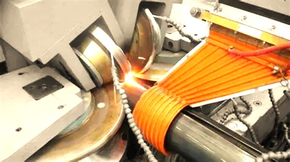

Future Systems Engineer
I am a dedicated researcher and student focused on the intersection of electromagnetic physics and modern manufacturing. Through high-frequency induction studies, I aim to optimize global infrastructure production.

In-depth analysis of high-frequency electrical systems and their industrial applications.
Focusing on the backbone of global manufacturing—seamed pipes and structural square tubes.
Applying strict research methodologies and APA standards to modern engineering problems.
Explore my latest technical project covering the physics, components, and manufacturing flow of HFI welding systems.
Explore Assignment Overview